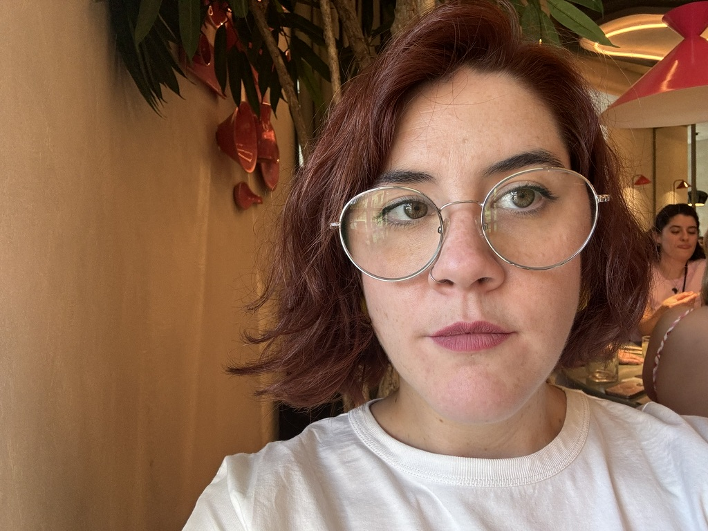

Marta Blas

Summary
Hi! My name is Marta and I'm introducing myself in the coding world to make a really big change in my life: a job which will make me feel AMAZING! See ya :)
Education
- Professional JavaScript Course - AEPI (2020)
- Professional master's degree in design, web layout and JQuery - AEPI (2020)
Work Experience
Technical & Customer Documentation Editor - Devo Inc.
2021 - 2024
- Editing of technical visual content for customer training using Camtasia and Adobe Premiere Pro.
- Review and update of educational material for customers.
- Strategic planning of courses for customers.
- Review and editing of technical documentation.
- Management of internal documentation platform (Confluence).
- Development of use cases for the Community’s web (Devo Commnunity) created for the customers and the employees.
- Creation of knowledge bases on Customer Support and Customer Success teams.
- Data analysis through Salesforce and Gainsight.
Documentation Manager - Lotus Control S.L.
2019 - 2020
- Activation of customer and supplier documentation at the beginning of each project.
- Management of the flow of documentation and detailed information between customers and suppliers.
- Administration of documentation from engineering portals (e.g., INTECSA's document portal).
- Detailed review of said documentation.
- Creation of Technical and Quality Dossiers upon project completion.
Administrative Assistant - Konecta SAT (for Banco Santander)
2010 - 2019
Skills
- HTML
- CSS
- JavaScript
- React
- Confluence
- Jira
- Camtasia
- MS Office
Other